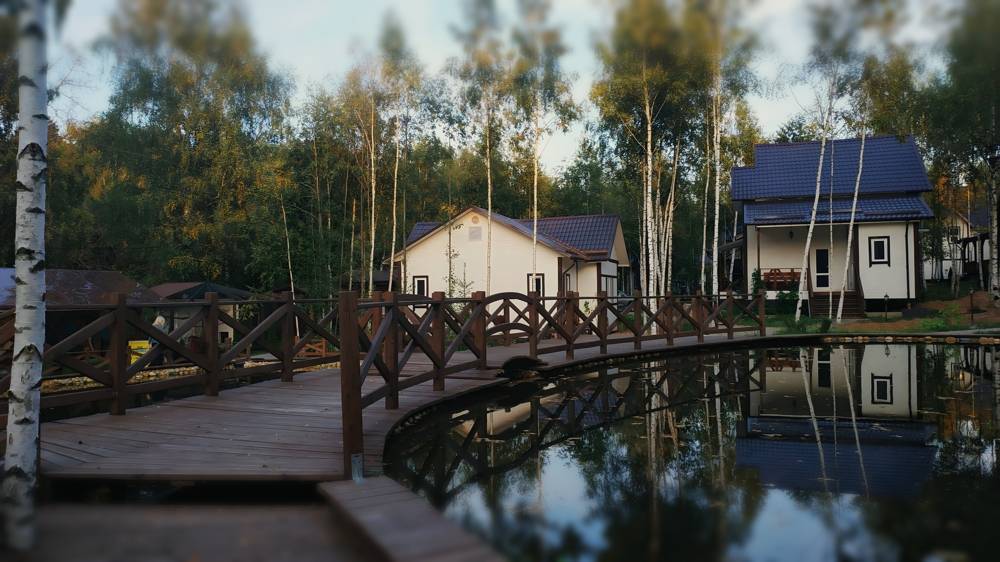

Боярская усадьба
семейный отель
Номера и коттеджи
Рестораны
Банкеты
Как добраться
Контакты
+7 495 885-66-29
Забронировать
Семейный отель · Дмитровский округ, посёлок Свистуха
Коттеджи
в берёзовой роще
Выбрать даты
45 км по Дмитровскому шоссе